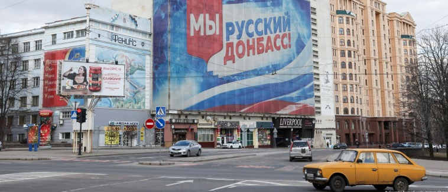

Russia X Ucrânia: a guerra no donbass
Rogério, 28/08/2023
soldados ucranianos
24 de fevereiro de 2022.
Essa data, para muitos, é vista como o início da mundialmente conhecida "Guerra na Ucrânia". Porém, isso não é algo que simplesmente surgiu sem qualquer mínima motivação. Na realidade, essa guerra acontece a muito tempo, e é exatamente essa parte desconhecida por muitos que essa matéria veio cobrir, trazendo os pontos principais para o entendimento da situação atual.
Para entendermos de forma completa, precisamos voltar anos atrás, mais especificamente para o final de 1991. Naquele ano, após um período já conturbado, a União Soviética encontrou seu fim, separando-se em 15 estados soberanos, todos que estavam sobre controle da mesma antes de sua completa dissolução. Esse foi um período conturbado em todos esses estados, econômica e também socialmente, mas alguns sofreram mais do que outros, sendo a ênfase dessa matéria especificamente a Ucrânia e Rússia.
De forma resumida, podemos avançar um pouco a partir da citada data, quando o ainda atual presidente Russo Vladimir Putin assumiu seu cargo por indicação do primeiro presidente pós-soviético, Boris Yeltsin, que fez com que o povo democraticamente elegesse seu "sucessor". Putin conseguiu consolidar muito bem seu poder, pois ele conseguiu recolocar a Rússia novamente como potência econômica e militar, além de estabilizar o país politicamente, garantindo com que ele se mantenha até hoje na presidência.
Dado esse contexto, temos um ano crucial na política do Leste Europeu, 2014. Desde o fim da União Soviética a Ucrânia manteve uma postura pró-Moscou, o que agradava a elite política russa. Porém, no dito ano, uma série de eventos como manifestações políticas se espalharam por parte do território ucraniano. Essa série de eventos ficou conhecida como Euromaidan (Євромайдан), que significa algo como Europraça, e os manifestantes e agitadores demandavam por mudanças políticas, principalmente desejando que a Ucrânia se livrasse da influência russa e adotasse uma postura pró-europeia.
Existem muitos fatores que causaram toda essa situação, porém nosso foco é mais especificamente na região do Donbass. Historicamente, essa região foi uma das mais importantes do Império Russo e até mesmo da União Soviética, sendo considerada coração industrial do país.
Portanto, com as manifestações e a instabilidade política na Ucrania, a Rússia viu a oportunidade perfeita para anexar a península da Crimeia que tinha maioria russa em termos de idioma falado.
O Leste Ucraniano, que faz fronteira com a Rússia e tem consequentemente maioria de falantes Russos, se aproveitou do apoio indireto do governo Putin para iniciar uma revolução armada, alegando não se sentirem parte da Ucrânia, formando as repúblicas populares de Donetsk e Lugansk (Донецская и Луганская Народная Республика). Em reação a isso, o governo Ucraniano começou a lutar de forma armada contra os separatistas, em uma guerra que se estendeu de forma praticamente parada até o conhecido dia 24 de fevereiro de 2022, onde a Rússia resolveu intervir abertamente junto aos separatistas, entrando em guerra direta com o governo Ucraniano, pela liberdade dessas repúblicas separatistas, que atualmente já foram anexadas à Rússia, juntamente com o restante dos territórios sobre controle deles.24 de fevereiro de 2022.
Essa data, para muitos, é vista como o início da mundialmente conhecida "Guerra na Ucrânia". Porém, isso não é algo que simplesmente surgiu sem qualquer mínima motivação. Na realidade, essa guerra acontece a muito tempo, e é exatamente essa parte desconhecida por muitos que essa matéria veio cobrir, trazendo os pontos principais para o entendimento da situação atual.
Para entendermos de forma completa, precisamos voltar anos atrás, mais especificamente para o final de 1991. Naquele ano, após um período já conturbado, a União Soviética encontrou seu fim, separando-se em 15 estados soberanos, todos que estavam sobre controle da mesma antes de sua completa dissolução. Esse foi um período conturbado em todos esses estados, econômica e também socialmente, mas alguns sofreram mais do que outros, sendo a ênfase dessa matéria especificamente a Ucrânia e Rússia.
De forma resumida, podemos avançar um pouco a partir da citada data, quando o ainda atual presidente Russo Vladimir Putin assumiu seu cargo por indicação do primeiro presidente pós-soviético, Boris Yeltsin, que fez com que o povo democraticamente elegesse seu "sucessor". Putin conseguiu consolidar muito bem seu poder, pois ele conseguiu recolocar a Rússia novamente como potência econômica e militar, além de estabilizar o país politicamente, garantindo com que ele se mantenha até hoje na presidência.
Dado esse contexto, temos um ano crucial na política do Leste Europeu, 2014. Desde o fim da União Soviética a Ucrânia manteve uma postura pró-Moscou, o que agradava a elite política russa. Porém, no dito ano, uma série de eventos como manifestações políticas se espalharam por parte do território ucraniano. Essa série de eventos ficou conhecida como Euromaidan (Євромайдан), que significa algo como Europraça, e os manifestantes e agitadores demandavam por mudanças políticas, principalmente desejando que a Ucrânia se livrasse da influência russa e adotasse uma postura pró-europeia.
Existem muitos fatores que causaram toda essa situação, porém nosso foco é mais especificamente na região do Donbass. Historicamente, essa região foi uma das mais importantes do Império Russo e até mesmo da União Soviética, sendo considerada coração industrial do país.
Portanto, com as manifestações e a instabilidade política na Ucrania, a Rússia viu a oportunidade perfeita para anexar a península da Crimeia que tinha maioria russa em termos de idioma falado.
O Leste Ucraniano, que faz fronteira com a Rússia e tem consequentemente maioria de falantes Russos, se aproveitou do apoio indireto do governo Putin para iniciar uma revolução armada, alegando não se sentirem parte da Ucrânia, formando as repúblicas populares de Donetsk e Lugansk (Донецская и Луганская Народная Республика). Em reação a isso, o governo Ucraniano começou a lutar de forma armada contra os separatistas, em uma guerra que se estendeu de forma praticamente parada até o conhecido dia 24 de fevereiro de 2022, onde a Rússia resolveu intervir abertamente junto aos separatistas, entrando em guerra direta com o governo Ucraniano, pela liberdade dessas repúblicas separatistas, que atualmente já foram anexadas à Rússia, juntamente com o restante dos territórios sobre controle deles.